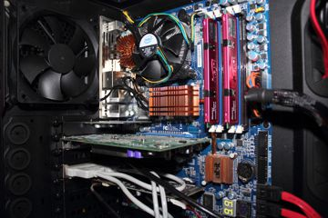

- +48 362-20-20

Zajmujemy się kompleksową naprawą laptopów, tabletów


Skorzystaj z usług najlepszego serwisu w Radomiu.
Zajmujemy się kompleksową naprawą laptopów, tabletów
i komputerów stacjonarnych.
- Naprawiamy płyty główne oraz karty graficzne.
- Odzyskujemy dane z uszkodzonych dysków twardych.
- Zajmujemy się konserwacją oraz oczyszczaniem komputerów i laptopów.
- Modernizujemy laptopy oraz komputery stacjonarne.
modernizacja
Nasz serwis ulepszy Twój komputer poprzez wymianę starych części na nowsze oraz bardziej zaawansowane technologicznie.
Odzyskiwanie danych
W naszym serwisie odzyskami Twoje cenne dane z uszkodzonych nośników. Skorzystaj z bezpłatnej diagnozy!
Konserwacja
Nasz serwis oferuje fachową konserwację laptopów, tabletów oraz komputerów stacjonarnych. Skorzystaj z naszej oferty!
Naprawa płyt głównych
Zajmujemy się profesjonalną naprawą płyt głównych oraz kart graficznych wszystkich producentów. Nasz wykfalfikowany personel z pewnością odnajdzie każdą usterkę.